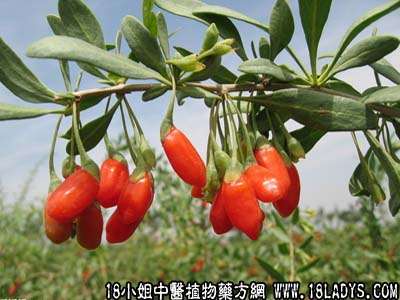

古籍名：枸杞《神农本草》。
别名：土地骨、土古。
植物名：枸杞。
生长环境：本品为有刺灌木。常见的为栽培种，北方为野生的灌木，喜生于钙质土壤上。
分布：我国自北部里至海南皆产。
入药部分：根。
采集期：夏。
自采地点：家种。
性味：性凉、味甘。
功能：清骨火、退热。
主治、用量和用法：1、湿火骨痛：干根1至2两，清水煎服；2、阴火发热：用法同上。
验方：（治骨火方）枸杞根1两、桑枝1两、茅根5钱、川破石5钱、清水四碗，煎成一碗服。
（方解）枸杞头去骨火；桑枝利关节；茅根泻肝肾火；川破石透邪外泄。本方对湿火骨痛，疗效显著。
（方歌）湿火疼痛枸杞。茅根桑枝至堪珍，透邪泻热川破石，止痛全好却病因。
本文解释权归中药大全，本文地址：https://www.daquan.com/post/1625.html